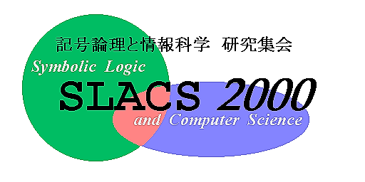

会場への道順:
- JR 京都駅から:
基本的には「バスのみ」と「地下鉄＋バス」の２つの方法があります．
バスは２種類ずつの系統が使えます．
- バスのみ
京都駅のバスプールは北側の烏丸口にあります．
新幹線からは一番遠い方で，いったん在来線の方へ行ってそこを突き抜けた
所になります．
- 市営バス: 206号系統の東山通経由 (反時計まわり) で百万遍バス停下車
[40分ぐらい, 220円], 下車後徒歩５分
- 市営バス: 17号系統の銀閣寺・錦林車庫方面行きで京大農学部前バス停下車
[40分ぐらい, 220円], 下車後徒歩１分
- 地下鉄＋バス
京都駅の地下鉄乗り場は駅の東側にあります．
新幹線を降りたら在来線への乗り換え口に惑わされずに，
「地下鉄」の標識を探して
東の方の出口から地下鉄に乗り換えてください．
- 地下鉄＋市営バス: 地下鉄烏丸線の国際会館行きで今出川駅下車
[10分ぐらい], その後地上に出て 百万遍・銀閣寺方面のバス停を探す．
(i) 203号系統ならば京大農学部前バス停下車 [15分ぐらい]で下車後徒歩１分,
(ii) 201号系統ならば百万遍バス停下車 [14分ぐらい]で下車後徒歩５分,
[最初に地下鉄バス乗り継ぎ券を買うと 390円,
ばらばらに買ってしまうと 230円＋220円]
- 地下鉄＋タクシー: 上記と同様に今出川駅へ行き地上に出て
タクシーを拾う．「京大農学部前へ」と言う．[おそらく1000円ぐらい?]
- 京都駅からタクシー: これはお金がかかると思う．地下鉄＋タクシーよ
り速いとも言いきれない．
- 飛行機で来る場合 (大阪伊丹空港から):
いろいろな経路があります．試してみてください．
私は「モノレール＋阪急」を愛用しています．
- リムジンバス: JR京都駅行きのリムジンバスに乗る [1時間, 1300円]，
その後は上記の道順．
- モノレール＋阪急:
大阪モノレールで南茨木駅へ．
そこから阪急 京都線で烏丸（からすま）駅へ．
南茨木駅は各駅停車しか止まらないので，
次の茨木駅で特急か急行に乗り換えること．
烏丸駅からは地下鉄烏丸線に乗って今出川駅へ行きその後バスに乗る．
（詳細は上記の京都駅からの行き方のうち地下鉄＋市営バスを使う場合を参照）．
- 阪急:
バスかモノレールで阪急 蛍ヶ池 駅へ行く．
そこから阪急 宝塚線で十三（じゅうそう）駅へ．
十三駅から阪急 京都線で烏丸駅へ （特急か急行に乗ること）．
烏丸駅からの行き方は上記の手順を参照．
- JR京都駅から京都大学への道順については，
美濃研究室作成の
ガイドも参考になります．ただし，本部キャンパス内の情報工学教室へ
の道順を書いてあります．SLACS の会場は，今出川通の北に隣接する
北部キャンパス内の数学教室です．
- 京都中心部 (四条河原町〜三条河原町 周辺)への行き方:
「まちなか」に行きたい人は，
市営バス17号系統 (京都駅〜この付近〜京都大学 という経路) を使うと良い
でしょう．
祇園でどんちゃんやりたい人は SLACS 参加者にはいないと思いますが，
その場合は 206号系統 (時計回り) が良いです．
- 回数券等:
バスの回数券は 1000円からあります．
バス専用の回数券とか地下鉄・バス兼用のプリペイドカードとか，
関西圏内の私鉄・市営交通に乗れる（値引きのない）プリペイドカードとか
いろいろあります．当然，対象範囲が狭い方が値引き率が良くなります．
地下鉄から市営バスに乗り継ぐときは，最初に乗る駅で「地下鉄バス乗り継ぎ
券」を買いましょう．
市営バスから地下鉄に乗り継ぐときには，「バス地下鉄乗り継ぎ券」を買うと
得ですが，地下鉄の駅ぐらいでしか買えないので，前日にあらかじめ買って
おくという技が必要です．
SLACS ホーム
SLACS2000幹事:
亀山幸義